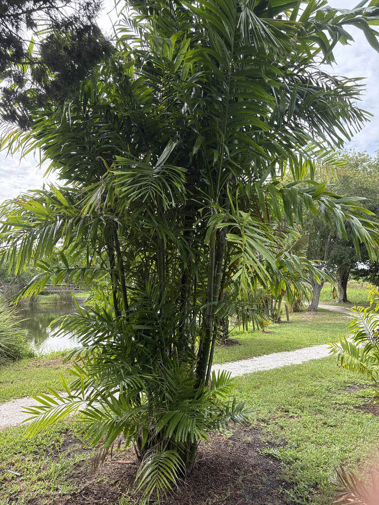

- The species name says it all: microcarpum is Latin for 'small-fruited,' and this palm holds the distinction of producing the tiniest fruits in its entire genus. Every other Ptychosperma makes bigger berries — this one is the outlier.
- The crownshaft — that smooth, waxy cylinder at the top of the trunk — can range from olive-green to a pale silver, sometimes approaching white. Few palms in the park show that kind of variation in a single species.
- This is one of the rarer palms in cultivation worldwide. It remained virtually unknown outside Papua New Guinea until the 1970s, and today it is still found mainly in specialist botanical collections — Fairchild Tropical Botanic Garden in Miami is among the handful of institutions growing it.
Ptychosperma microcarpum is native to the Central Province of Papua New Guinea, where it grows in montane tropical rainforest at elevations around 1970 feet. Its total wild range is estimated at roughly 2,440 square kilometers — a compact footprint that makes it one of the more geographically restricted members of its genus.
The species was virtually unknown in cultivation until the 1970s, when it began to attract attention from specialist palm collectors. International distribution to botanical gardens in Hawaii and Florida followed in the 1990s.
Today it remains rare outside dedicated collections — a stark contrast to its more familiar relative Ptychosperma elegans, which has become one of the most widely planted palms in South Florida.
- The genus Ptychosperma takes its name from the Greek for 'folded seed' — crack open any fruit in the group and you will find the seed deeply grooved along its surface, as if pressed with a mold. That shared character ties together a genus of roughly 30 species scattered across Papua New Guinea, Australia, the Solomon Islands, and a few nearby island chains.
- The clustering habit of Ptychosperma microcarpum is more than a growth form — it is a survival strategy. In the shifting margins of montane rainforest, a single trunk is vulnerable: one falling limb can sever it entirely. By maintaining an underground rhizome system connected to multiple stems, the plant hedges against that loss.
- Damage one trunk, and the shared root crown re-allocates energy to push up new suckers, keeping the genetic individual alive.
- Its montane origin — around 1970 feet elevation in Papua New Guinea's Central Province — also grants it a modest edge that purely lowland tropical palms lack.
- The cooler nights at altitude have given this species a slightly greater tolerance for brief temperature dips, which is one reason it performs reliably in South-Central Florida landscapes and attracts attention from growers experimenting at the margins of the tropics.
- The IUCN Red List assesses this species as Least Concern, but notes that field collections have been sparse since the 1970s and further surveys are needed to confirm population stability. Proposed highway expansion near Port Moresby is flagged as a potential future pressure on its forest habitat.
- Its range overlaps with Paga Hill National Park Scenic Reserve and Moitaka Wildlife Sanctuary, which provides some protection.
The small red to pinkish-red fruits are the main wildlife currency of this palm. Across the Ptychosperma genus, ripe drupes are readily taken by fruit-eating birds, which serve as the primary seed dispersers. Because the fruits of this species are notably small — the smallest in the genus — they are accessible to a wider range of bird species than the larger-fruited Ptychosperma palms.
Like others in the genus, the inflorescences attract pollinating insects when in bloom. Because this palm has no co-evolutionary history with Florida's native fauna, it does not serve as a larval host for local butterflies or moths. Its wildlife contribution here is principally through fruit and flower resources for generalist visitors.
Inflorescences emerge below the crownshaft (infrafoliar) and are relatively compact for the genus — branched sprays bearing densely packed triads of male and female flowers on the same plant. Male flowers are small and cream-colored; female flowers are minute and pale green. Both sexes appear on every individual tree, so each palm can set fruit without a separate pollen source nearby.
Small drupes, red to pinkish-red at maturity, each containing a single grooved seed. The fruit is the smallest produced by any species in the genus — the botanical name microcarpum records that fact directly. Fruit is not a food source for people.
Pinnately compound, dark green, and evergreen. The leaflets are narrowly wedge-shaped and held in a slightly plumose arrangement along the rachis, giving the frond a softer silhouette than the more rigidly two-ranked leaflets of some related palms. Old fronds shed cleanly from the crownshaft.
Usually multi-stemmed from the base, occasionally solitary. Trunks are slender, gray-brown, and closely ringed with the circular scars left by shed fronds. The crownshaft at the top of each trunk is well-developed and notably variable in color — olive-green through silvery to near-white — smooth and waxy to the touch.
The Trunk Clump: Start at ground level. Look for a tight cluster of multiple slender trunks rising from a single shared base, each one closely ringed with clean, horizontal leaf-scar bands — an elegant, architectural silhouette even before you look up.
The Variable Crownshaft: Follow a trunk upward to the smooth, waxy cylinder sitting just below the fronds. Unlike the uniform green of most common palms, this species can shift from olive-green all the way to a chalky silver-white — scan a few trunks and you may see the full range on a single plant.
The Feathery Canopy: Look through the leaves and notice that the narrow leaflets do not lie flat in one plane like a paddle. They angle outward in multiple directions — a plumose arrangement — giving the entire canopy a soft, hazy silhouette against the sky rather than a crisp, rigid outline.
No known toxicity to people or dogs. The fruit is not a food source — it is minimal in flesh and not eaten — but it is not harmful. Like others in the Ptychosperma genus, this palm has medium-to-high allergen potential, so people with pollen sensitivities may notice a reaction during bloom. Otherwise harmless.
Ptychosperma microcarpum is cultivated at Fairchild Tropical Botanic Garden in Miami and the Lae Botanic Gardens in Papua New Guinea, placing the park's specimen in genuinely distinguished company. It remains one of the rarer Ptychosperma species in cultivation anywhere in the world.
The IUCN notes that very few field collections of this species have been made since the 1970s–1980s, and further surveys of its native range in Central Province, Papua New Guinea are encouraged. The park's specimen is therefore a meaningful contribution to the visibility of a little-known palm.


- © Randall Carter (CC-BY-NC), via iNaturalist